Profile
呉
屋
栄
光
く
れ
や
ひ
で
み
つ
はじめまして。福岡から来阪した呉屋栄光です。これまでに自衛隊や営業など、を経験してきました。
営業では大きな現場を任せてもらえたり、資格を使って商品のい取り付けも行い、多岐にわたる知識と経験を学びました。
デザインやPCを用いた作業が好きで、業務の中でマニュアルやお客様の要望で図の作成もしました。満足度を高めるための努力を重ね、感謝の言葉をいただくこともありました。大きなやりがいを感じていました。
より専門的な知識と技術を身につけたいとこの度職業訓練学校に通い、将来はWeb業界に携われるよう日々精進しております。
これからも学びの精神を忘れず、仕事でも貢献できるように尽力してまいります。趣味はピアノを弾く（独学）、読書（心理学）などです。
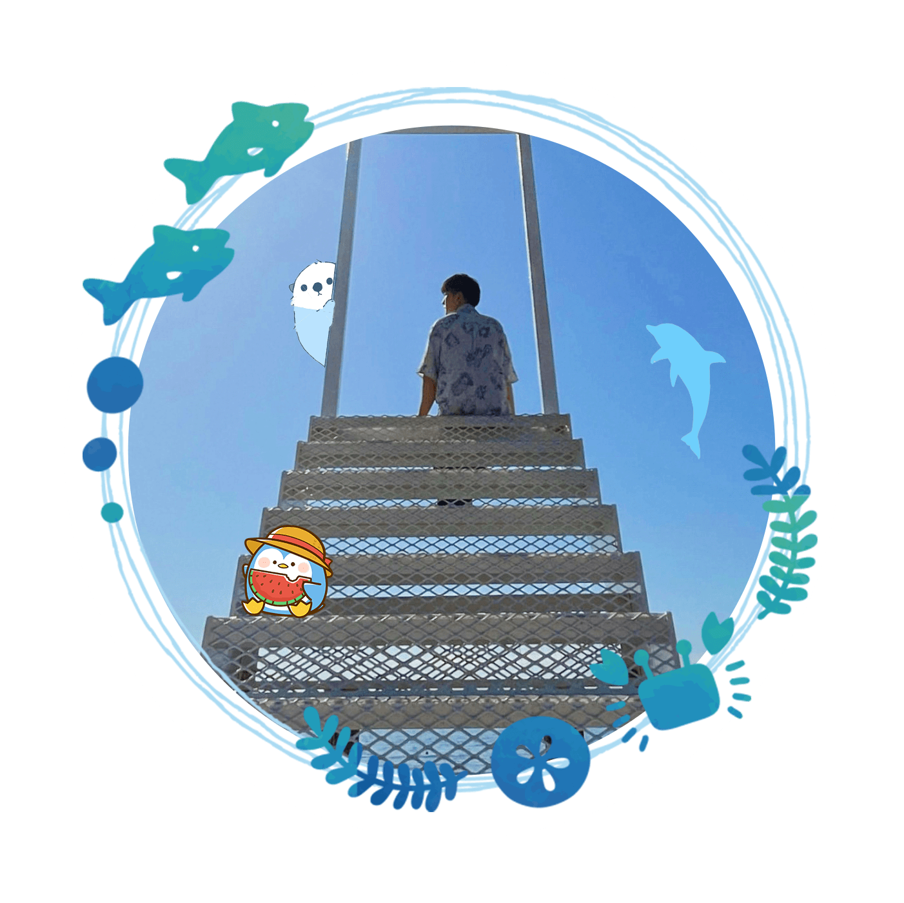
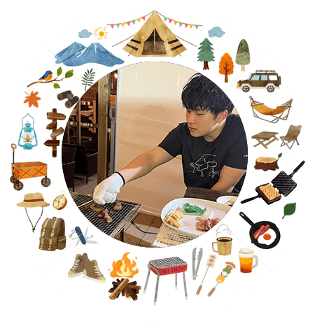
.svg)
Skill
-
PS
写真や画像の加工・編集、レタッチ、レイヤー、切り抜き、図形の作成などの基本操作が可能です。バナー作成の際に使用しました。
-
AI
図形や線の描画、簡単なアイコン・ロゴ作成、画像のパス化が可能です。ポートフォリオのアイコンはIllustratorで作成しました
-
Pr
動画のトリミング、画像の追加、BGMや効果音、文字入力やエフェクト・アニメーション加工などを付けた動画編集が可能です。
-
WP
基本的なLPページの作成に使用しました
-
CSS
CSSの基本的な構造を理解したコーディングが可能です。 Vscodeを用いてサイト制作することができます
-
HTML
HTML・CSSの基本的な構造を理解したコーディングが可能です。 Vscodeを使用し、サイトの作成が可能です。
-
JS
Java Scriptの基本知識。Java ScriptやjQueryを使用して、サイトにスライドショーなどの動きを付ける事が可能です。
-
Word
PowerPoint
Excel文章や画像、アニメーションや効果音を用いた基本操作が可能です。それらを使用し、プレゼンテーションの資料作成ができます。 又Wordは2級、Excelは3級持っております。
Design
web
-
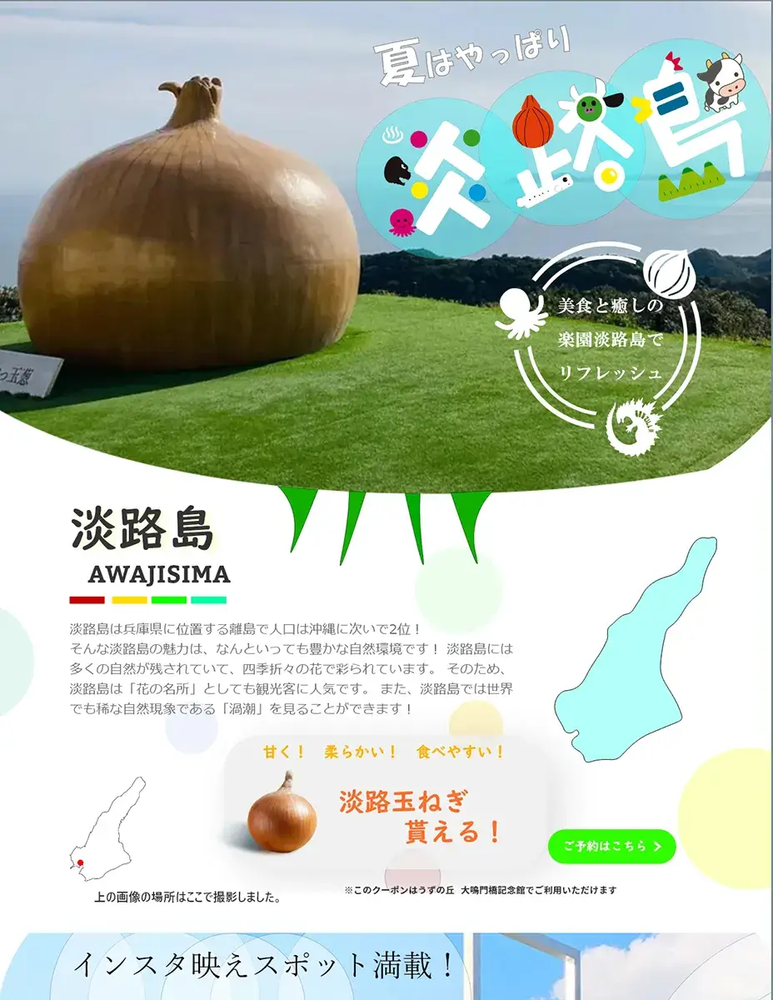
淡路島のLP
ターゲット：20代のカップル 淡路島のLPです。 夏に淡路島旅行にカップルで行きたくなるようなデザインにしました。 背景は落ち着いた色で統一し、場所に応じて背景を変えたり、文章も簡潔にして、写真が映えるような全体的にシンプルなデザインにしました。
-
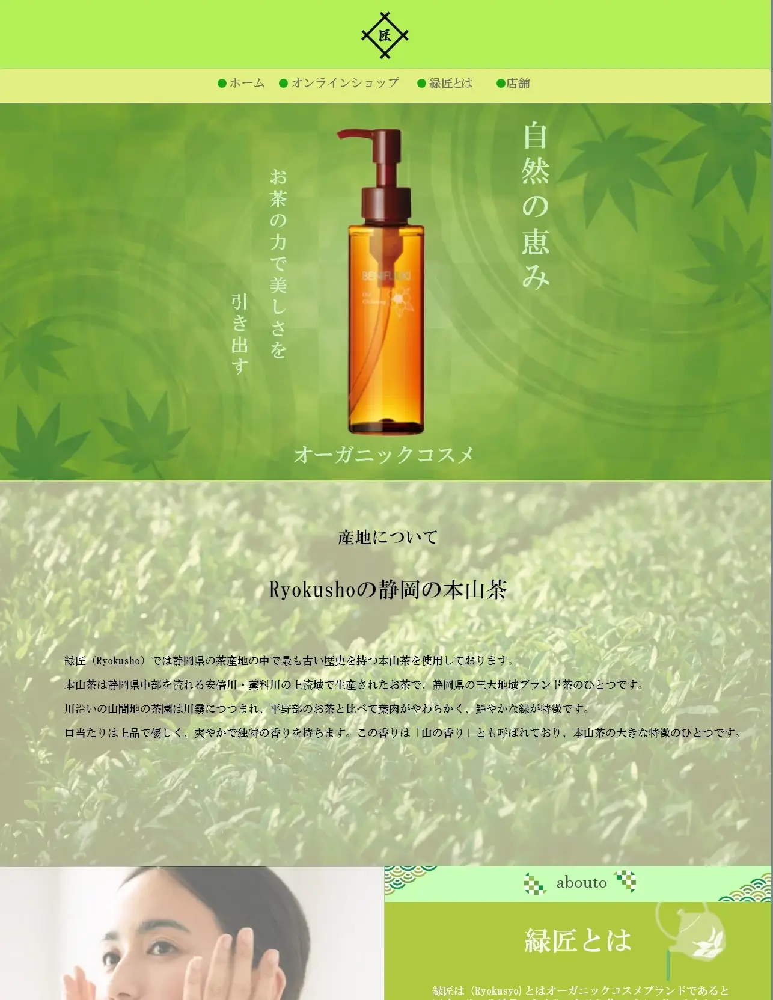
お茶のオーガニック化粧品
こちらはグループワークで作成したオーガニック化粧品のECサイトです。チームで連携を取り、コンセプト決め、デザインを行いました。お茶と化粧品とのバランスを考え、メインカラーに緑と薄橙色を使用することで、シンプルかつ自然の温かさが感じられるようデザインを工夫しました。
video
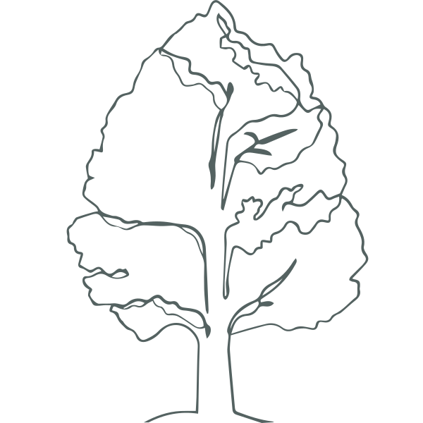

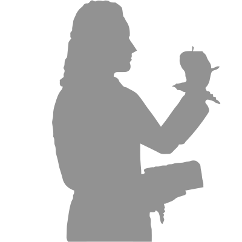
-
夢
睡眠用アプリをイメージして作成しました。寝ている主人公の夢を再現しました。
-
電子書籍
小説の物語をイメージして作成しました。小説の物語を再現しました。
like
-

-
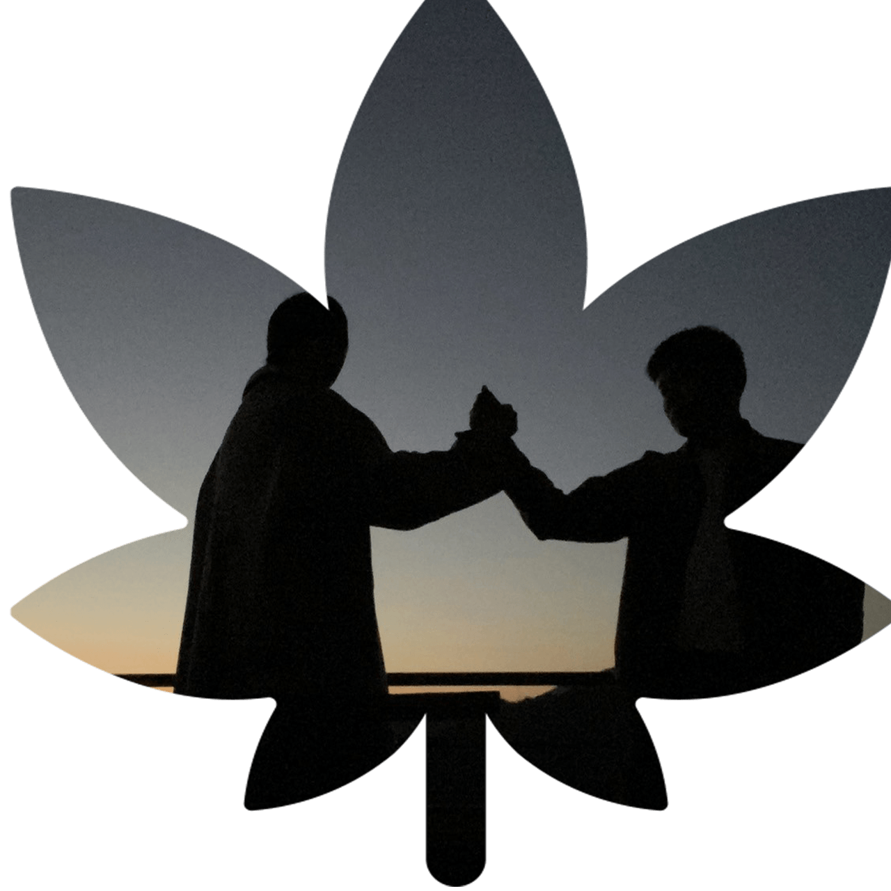
-
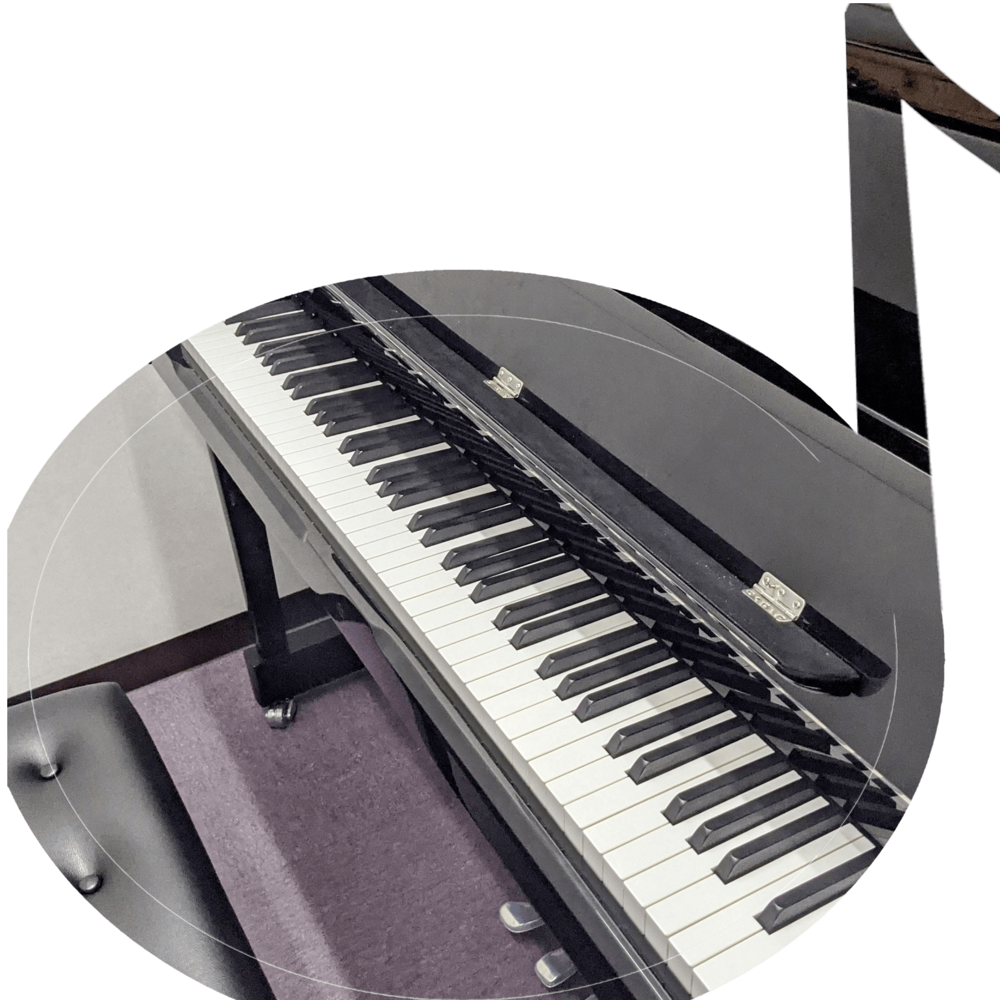
-
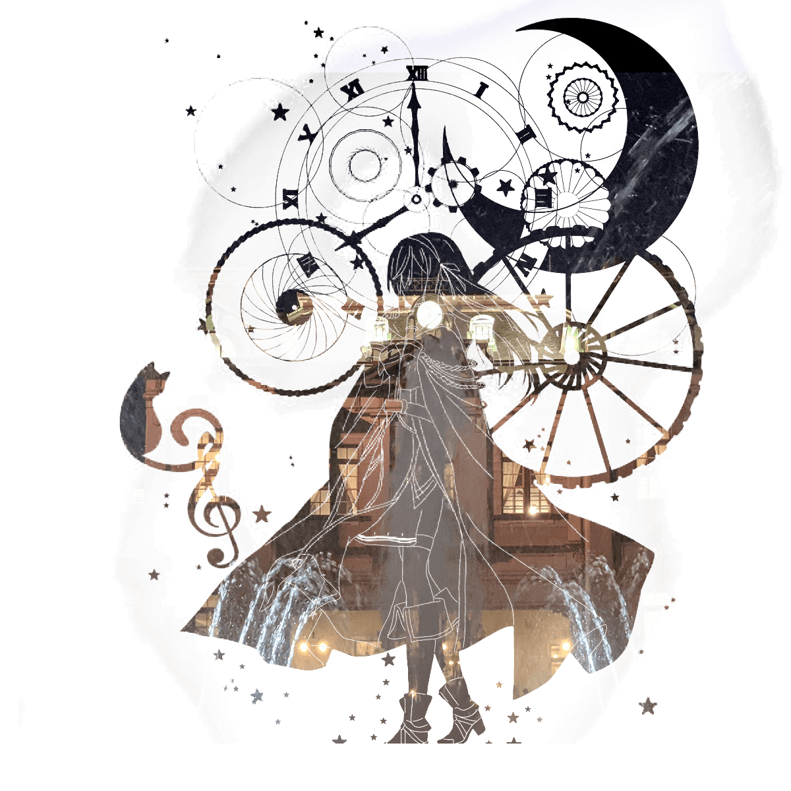
-

-
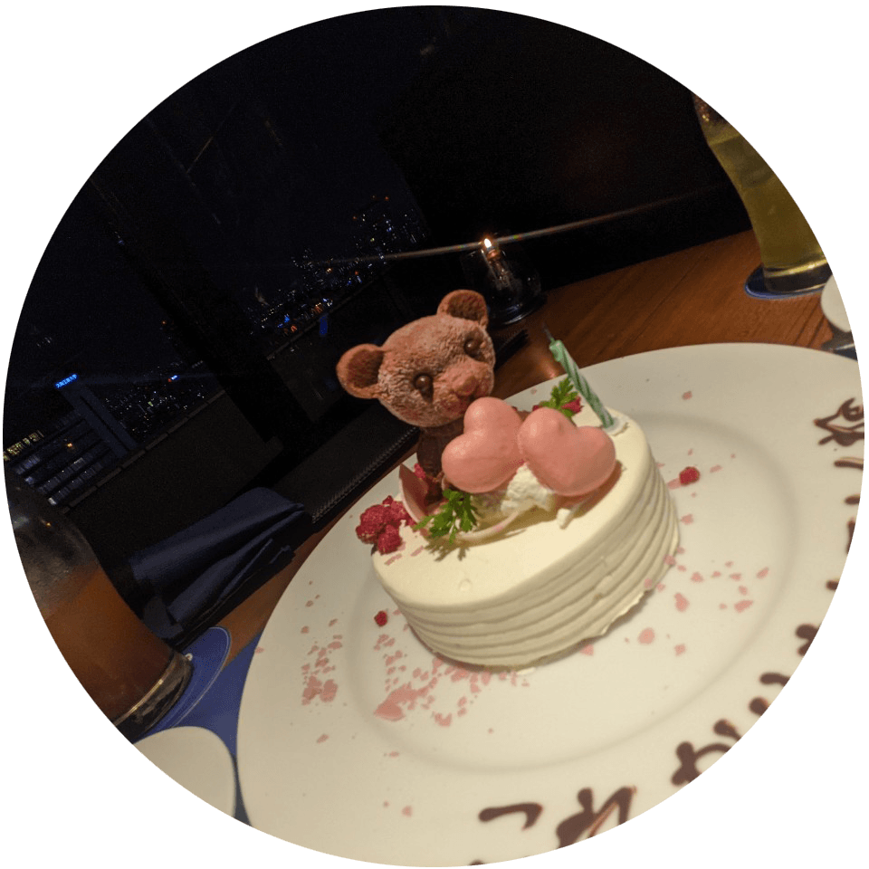
-
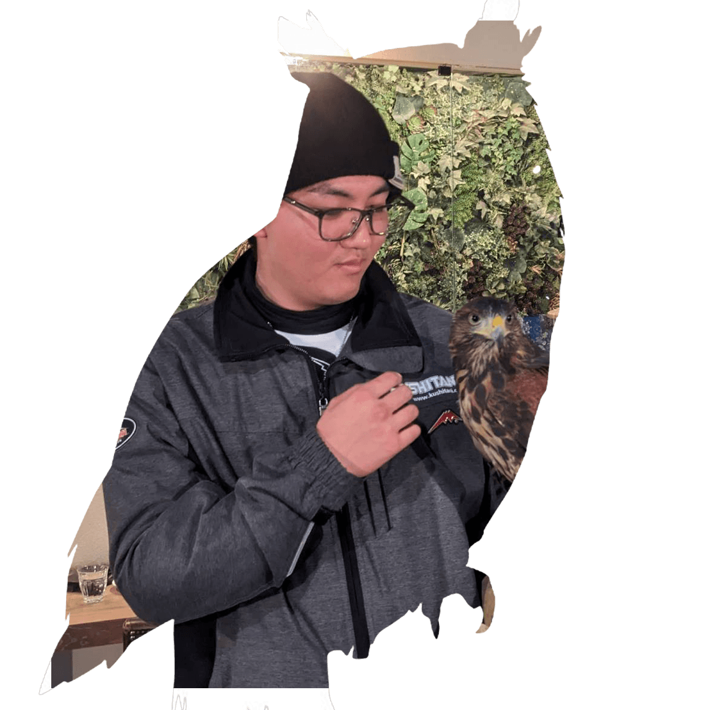